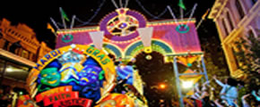

Welcome to Mardi Gras
Just a little information to be known.
Since our founding 23 years ago, with the purchase of a state-of-the-art Ferris, the company has enjoyed tremendous success. The Caruso brothers, our experienced and insightful leaders, bring a lifetime of carnival operations knowledge to each and every one of our engagements. The integrity and reliability of our operations, built over a lifetime, is testified to by our decade’s long relationship with many of North America’s largest and oldest events. Our route stretches from across the Texas Gulf Coast to West Texas and the South Plains.
More
Attractions
The actual presentation of our midway is a vital component of our success. We pay strict attention to every detail in an effort to assure our event will provide the public with maximum entertainment.
- Alien Abduction
- ATVs
- Baja Buggies
- Balloon Wheel
- Carousel
- Cliff Hanger
More
An Insight

Experience Mardi Gras like New Orleans! Grab your costumes and join the party.
More